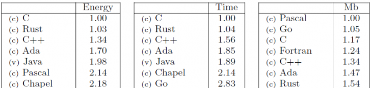

Porque Rust
- Júlio Biason
- https://functional.cafe/@juliobiason
- julio.biason@pm.me
- http://presentations.juliobiason.net
A languagem mais amada segundo o StackOverflow Survey 2019
... pelo 4⁰ ano seguido.
"Low Level Language with High Level Abstractions"
Resultado final com performance semelhate ao C...
... mas com abstrações em algo nível
- Strings sem tamanho fixo
- Listas
- Mapas
Imutabilidade por Default
fn main() {
let a = 2;
a = 3;
println!("{}", a);
}
3 | let a = 2;
| -
| |
| first assignment to `a`
| help: make this binding mutable: `mut a`
4 | a = 3;
| ^^^^^ cannot assign twice to immutable variable
fn main() {
let mut a = 2;
a = 3;
println!("{}", a);
}
Borrow Checker
a = String::from("hello");
a tem o valor "hello""
a tem o valor "hello""
0x3f5cbf89 = "hello"
fn main() {
let a = String::from("hello");
let _b = a;
println!("{}", a)
}
error[E0382]: borrow of moved value: `a`
--> src/main.rs:5:20
|
4 | let _b = a;
| - value moved here
5 | println!("{}", a)
| ^ value borrowed here after move
|
= note: move occurs because `a` has type `std::string::String`, which does not implement the `Copy` trait
E se eu precisar acessar a variável em mais de um lugar?
References
fn main() {
let a = String::from("hello");
let _b = &a;
println!("{}", a)
}
Regras do Borrow Checker
Uma região de memória tem apenas um dono.
A região é desalocada quando o dono sair de escopo.
Regras do Borrow Checker
Uma região de memória pode ter inifitas referências.
... desde que elas não durem mais do que o dono.
Regras do Borrow Checker
É possível ter uma referência mutável de uma região de memória.
... mas para haver uma referência mutável ela deve ser a única referência.

presente := Presente { ... }
canal <- presente
presente := Presente { ... }
canal <- presente
presente.abrir()E GC?
Hora da anedota!
localtime
SimpleDateFormatter
Rust resolveria isso?
Não
... na verdade, nem ia compilar.
Tipos Algébricos
(structs)
struct
struct Present {
package_color: String,
content: String
}
enum
enum IpAddr {
V4,
V6
}
enum IpAddr {
V4(String),
V6(String),
}
let home = IpAddr::V4(String::from("127.0.0.1");
match home {
V4(address) => println!("IPv4 addr: {}", address),
V6(address) => println!("Ipv6 addr: {}", address),
}
enum Option<T> {
Some(T),
None
}
Error Control
try:
something()
except Exception:
pass
try {
something();
} catch (Exception ex) {
System.out.println(ex);
}
FILE* f = fopen("someting.txt", "wb");
fprintf(f, "Done!");
fclose(f);
enum Result<T, E> {
Ok(T),
Err(E),
}
match File::create("something.txt") {
Ok(fp) => fp.write_all(b"Hello world"),
Err(err) => println!("Failure! {}", err),
}
match File::create("something.txt") {
Ok(fp) => match fp.write_all(b"Hello world") {
Ok(_) => (),
Err(err) => println!("Can't write! {}", err),
}
Err(err) => println!("Failure! {}", err),
}
let mut file = File::create("something.txt").unwrap();
file.write(b"Hello world").unwrap();
let mut file = File::create("something.txt")?;
file.write(b"Hello world")?;
OK(())
Macros
Traits/Generics
Crazy stuff
Bibliotecas
Rayon
fn sum_of_squares(input: &[i32]) -> i32 {
input.iter()
.map(|&i| i * i)
.sum()
}
Rayon
fn sum_of_squares(input: &[i32]) -> i32 {
input.par_iter()
.map(|&i| i * i)
.sum()
}
Log-Derive
#[logfn(ok = "TRACE", err = "ERROR")]
fn call_isan(num: &str) -> Result<Success, Error> {
if num.len() >= 10 && num.len() <= 15 {
Ok(Success)
} else {
Err(Error)
}
}
- Júlio Biason
- https://functional.cafe/@juliobiason
- julio.biason@pm.me
- http://presentations.juliobiason.net